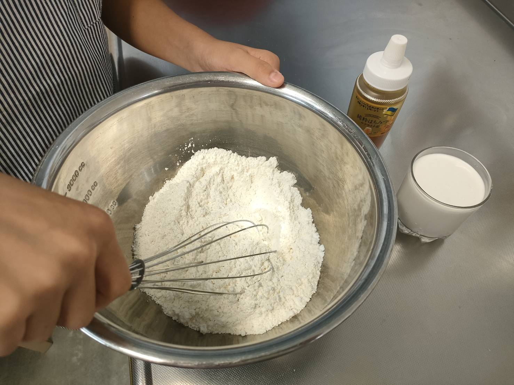
STEP 1 粉をまぜる
薄力粉・ベーキングパウダー・塩をボールに入れて、ホイッパーでよくまぜる。
レシピ動画♪
スマホならボタンをタップして見られます。
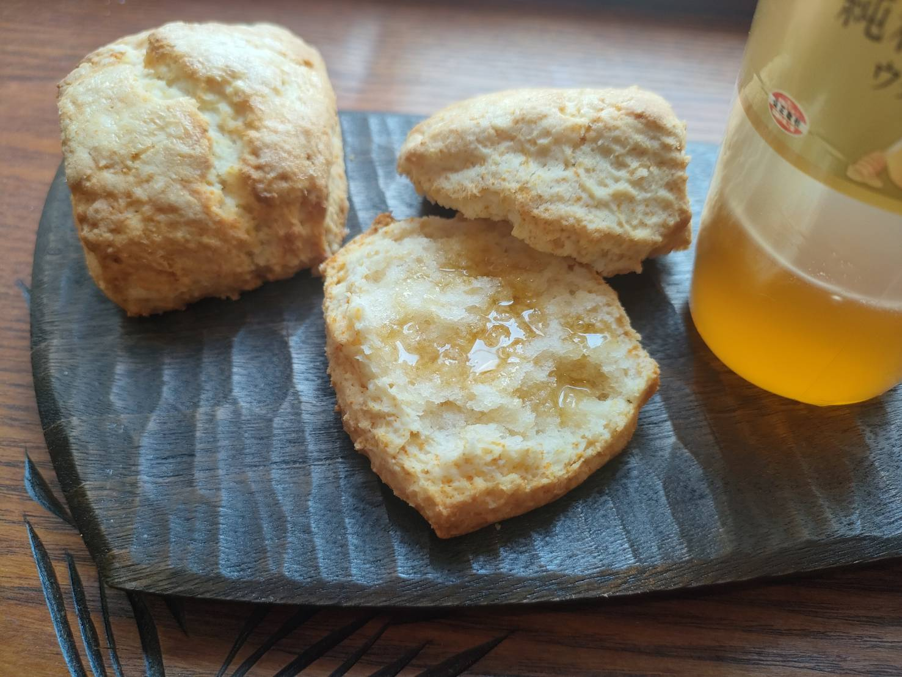

薄力粉・ベーキングパウダー・塩をボールに入れて、ホイッパーでよくまぜる。
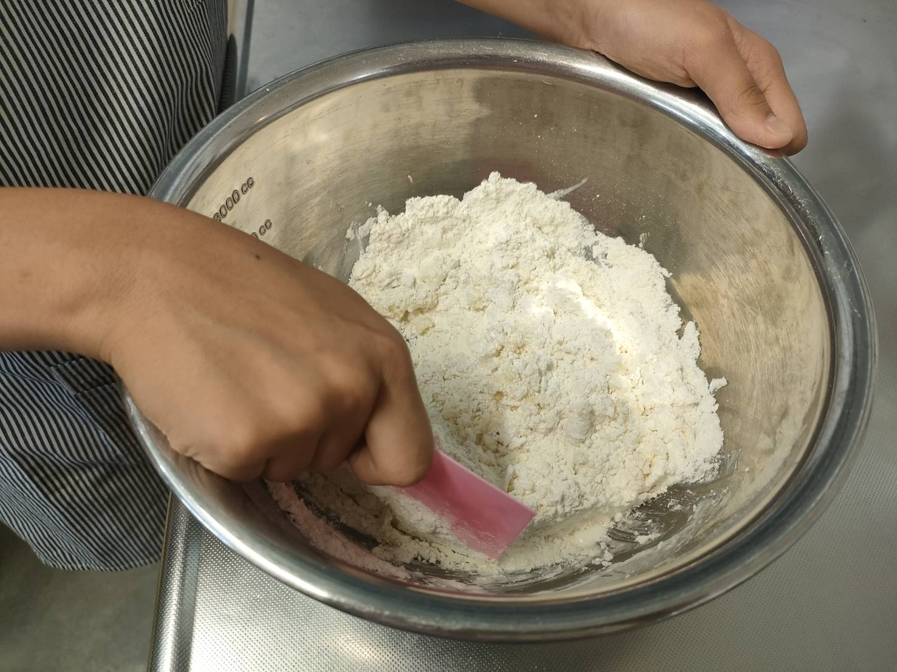
生クリームとはちみつを加えて切るようにまぜる。
＊こねないように注意。
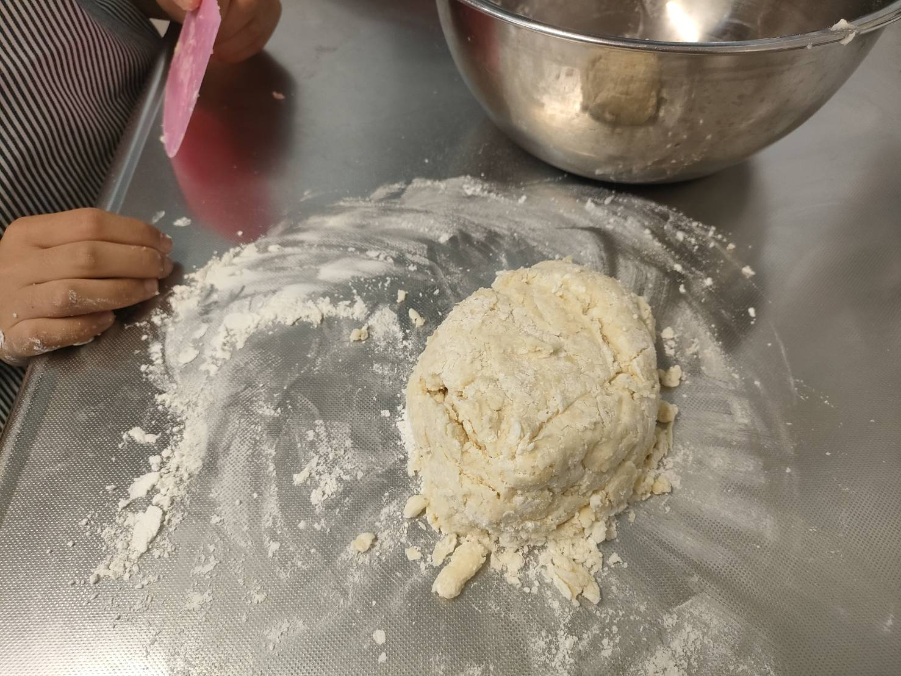
ある程度まとまったら打ち粉をした台に出す。
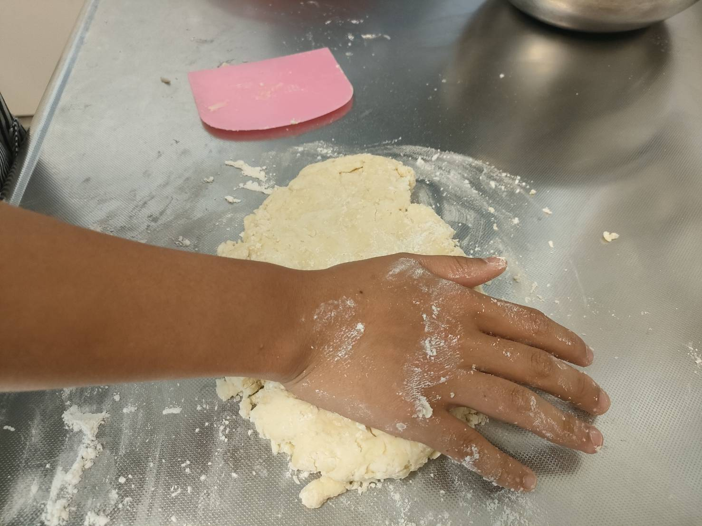
手で押し広げて半分に切って重ねる。これを2回繰り返す。
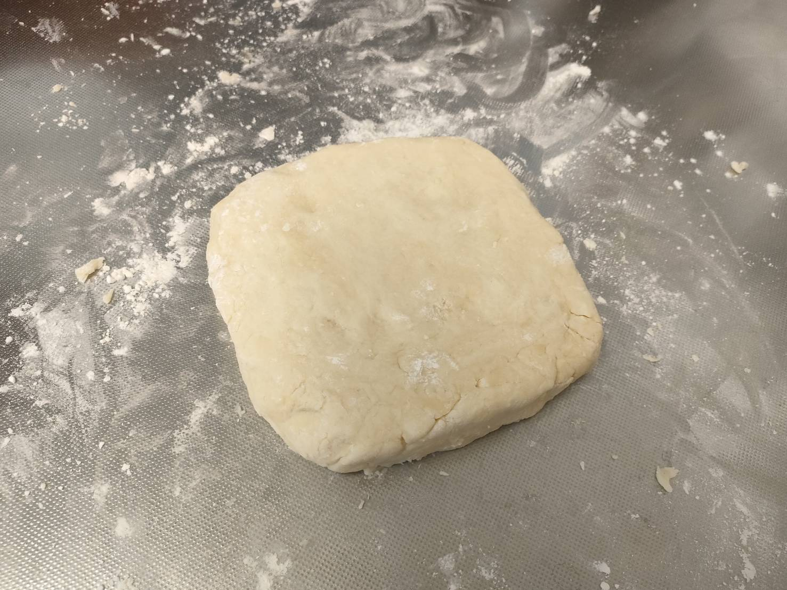
厚みをそろえて正方形にととのえる。
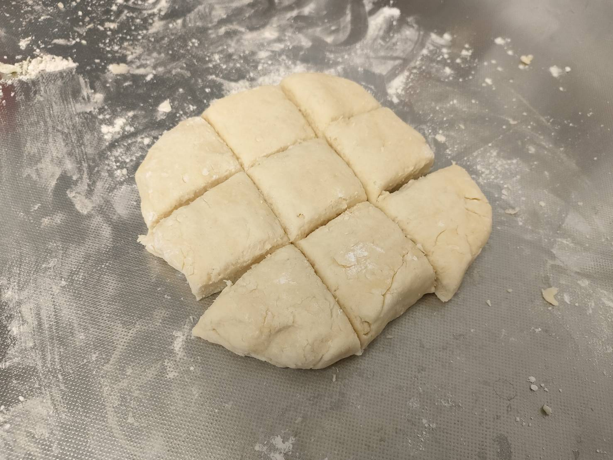
スケッパーか包丁で9個に切り分ける。
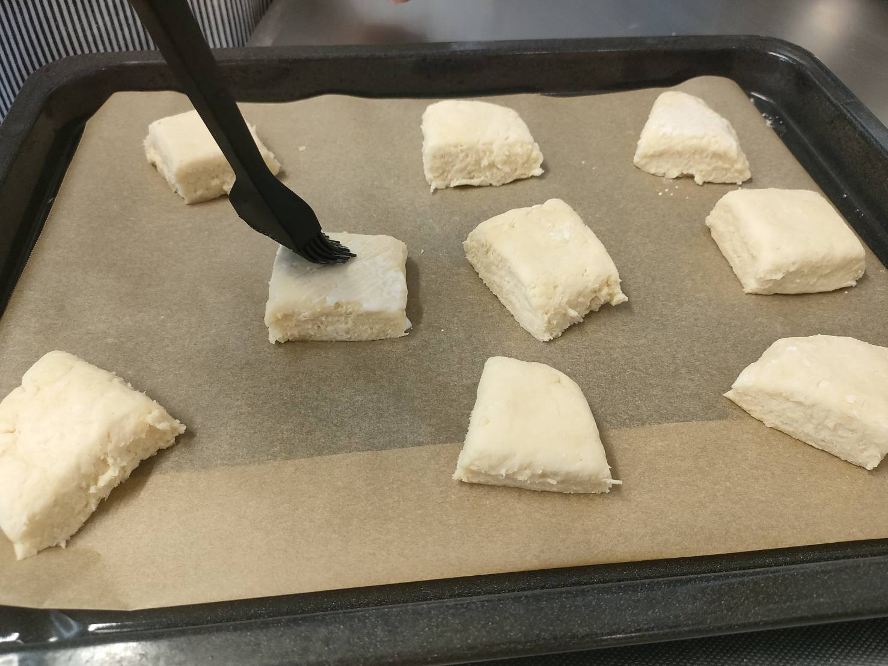
上面に生クリームをうすくぬる。
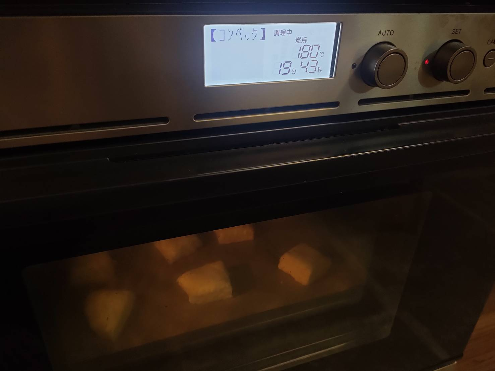
180℃に予熱したオーブンで約20分焼く。
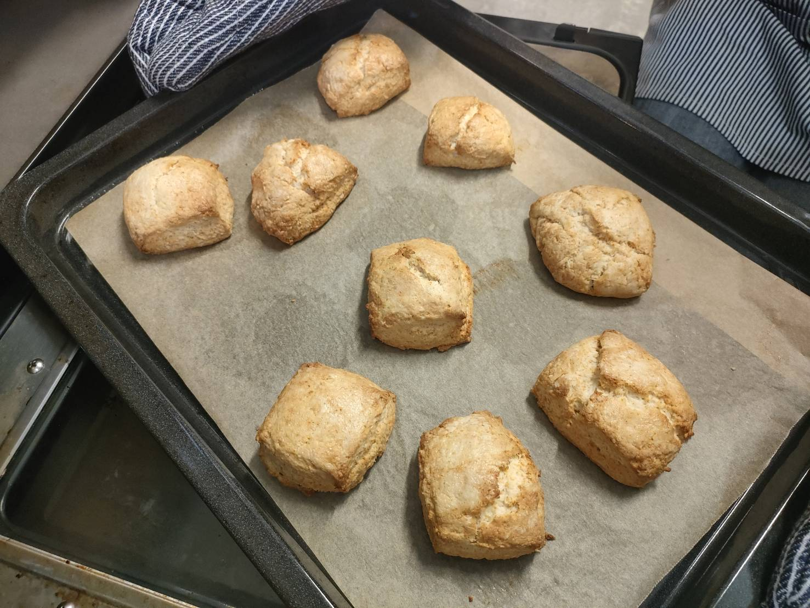
こんがり焼けたら完成♪
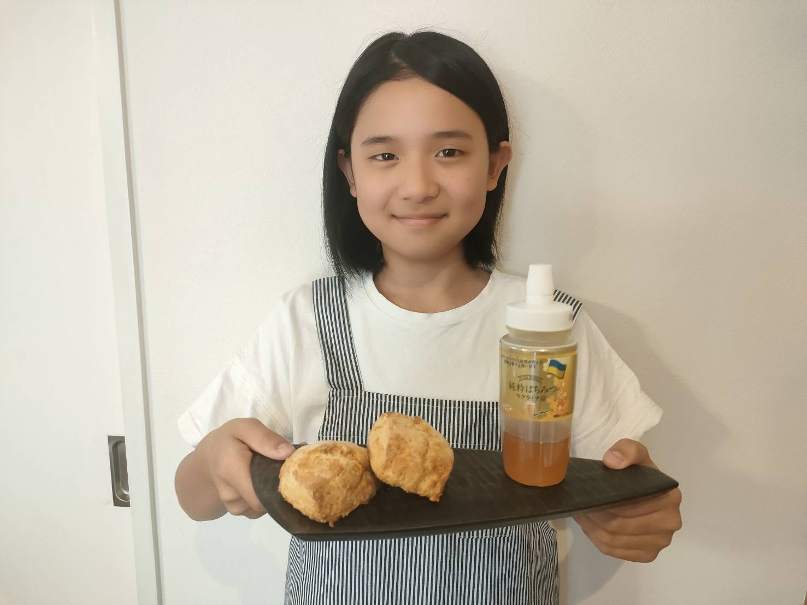